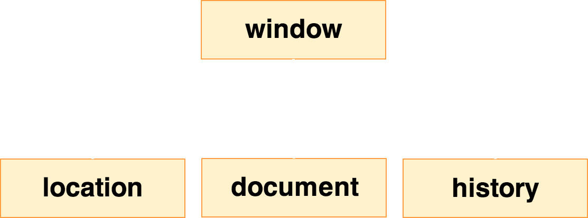

とにかく書くべし。本は最初に読んでもあんまりわからないと思うのである程度わかってきてから読むのがいいと思う
<p id='foo'>hoge</p>
<p id='bar'>hoge</p>document.getElementsByTagName('p');
//=> すべてのp要素を取得
document.getElementById('foo');
//=> idがfooの要素を取得DOM構築前にはそのDOMは取得できない
<script>
document.getElementById('foo'); // NG
</script>
<p id='foo'>foo</p>これだとOK
<p id='foo'>foo</p>
<script>
document.getElementById('foo'); // OK
</script>DOMが構築し終わったあとに発生するイベントを使う
document.addEventListener('DOMContentLoaded', function() {
// ここにメインの処理
}, false);ただしIEでこのイベントがないのでwindowのonloadイベントを使うのが簡単（画像などの読み込みをまつので発火が遅いのが欠点）

window.alert('foo');このウィンドウにアラートを出せという意味
alert('foo');windowは省略してもOK
window.document.getElementById('foo');ウィンドウのドキュメント（HTML）の中にあるfooというidの要素をとってこいということ
jQueryも例外ではない。windowを省略しなければこうなる。
window.$('#foo')#btn1
function click_handler() {
alert('clicked!')
}
var btn1 = document.getElementById('btn1');
btn1.addEventListener('click', click_handler, false);無名関数という名前のない関数を使えるので以下のように書くことも可能
var btn1 = document.getElementById('btn1');
btn1.addEventListener('click', function() {
alert('clicked!');
}, false);もしくはonclick属性に書いてもいい
<p onclick='alert("clicked!")'>#btn1</p>functionでスコープをつくるので、varをつけて宣言した変数にはfunctionの外からアクセスできない
function foo() {
var x = 'hoge';
}
console.log(x); //=> undefinedvarをつけないとグローバル変数になるのでfunctionの外からでもアクセスできる
function foo() {
x = 'hoge';
}
console.log(x); //=> hogefunctionの外側で宣言された変数にはfunctionの中から参照できる。
var x = 'hoge';
function foo() {
console.log(x);
}
foo(); //=> hoge現在のスコープを探して変数が存在しなければ外側のスコープに探しにいく。これをスコープチェインといいます
スコープチェインでたどるとき、関数実行時の変数の値が参照される
var x = 'hoge';
function foo() {
console.log(x);
}
x = 'fuga';
foo(); //=> fuga(function() {
...
})();こんなコード見たことないですか？
単にスコープを作りたいときに使う。
例えば以下のように書くと、変数fooはグローバル変数になり、他のコードに影響を及ぼしたりしてよろしくない
<script>
var foo = 'hoge';
// なんか処理
</script>こう書けば変数fooはこの外では参照されないので安全
(function() {
var foo = 'hoge';
// なんか処理
})();
// ここではfooにアクセスできないfooはどこからもアクセスできなくなるはずだが、clickのコールバック関数の中でのみ参照される。これをクロージャといいます
(function() {
var foo = 'bar';
hoge.addEventListener('click', function() {
alert(foo); //=> bar
}, false);
})();特定のclass名の要素をとってくるだけで、クロスブラウザ対応してちゃんと書こうとすると数十行になる（面倒なのでコード書きません）
jQueryを使うとこう。超簡単。
$('.foo');HTMLの要素をとってきて、それに対して何か操作をする
これが超基本でほとんどすべて
var p = $('p'); // すべてのp要素をとってきて
p.remove(); // 全部削除する要素を取得する
$('#foo'); // idがfooな要素
$('.foo'); // classがfooな要素
$('div'); // div要素全部
$('ul li:nth-child(3)'); // CSS3なセレクタだって使えちゃう
$(':checked'); // checked属性がついている要素（独自セレクタ）取得したものに対して操作する
var foo = $('.foo');
foo.hide(); // fooを非表示にする
foo.show(); // fooを表示する
foo.css('color', '#F00'); // fooにcssを適用する
foo.html('<p>xxx</p>'); // fooの中のHTMLを書き換える
foo.remove(); // fooを削除するつなげて書いてもOK（メソッドチェーン）
$('.foo').css('color', '#F00').html('hoge').show();jQueryでイベントを設定する。直感的でわかりやすい。
$('.foo').click(function() {
alert('hoge');
});$('.foo').animate({
left: '1000px', // leftの値を1000pxに
opacity: 0 // opacityの値を0に
}, 2000); // 2000msかけて変化させる
新しい要素を作ってHTMLに追加
var div = $('<div>').html('hoge');
$('.foo').append(div); jQueryで簡単にHTTP Request
$.ajax({
type: 'GET',
url: '/api/user',
success: function() { ... },
error: function() { ... }
});DOMContentLoaded的なものを以下の書き方で書ける。もちろんIEでもOK
$(function() {
// ここにメインの処理
});